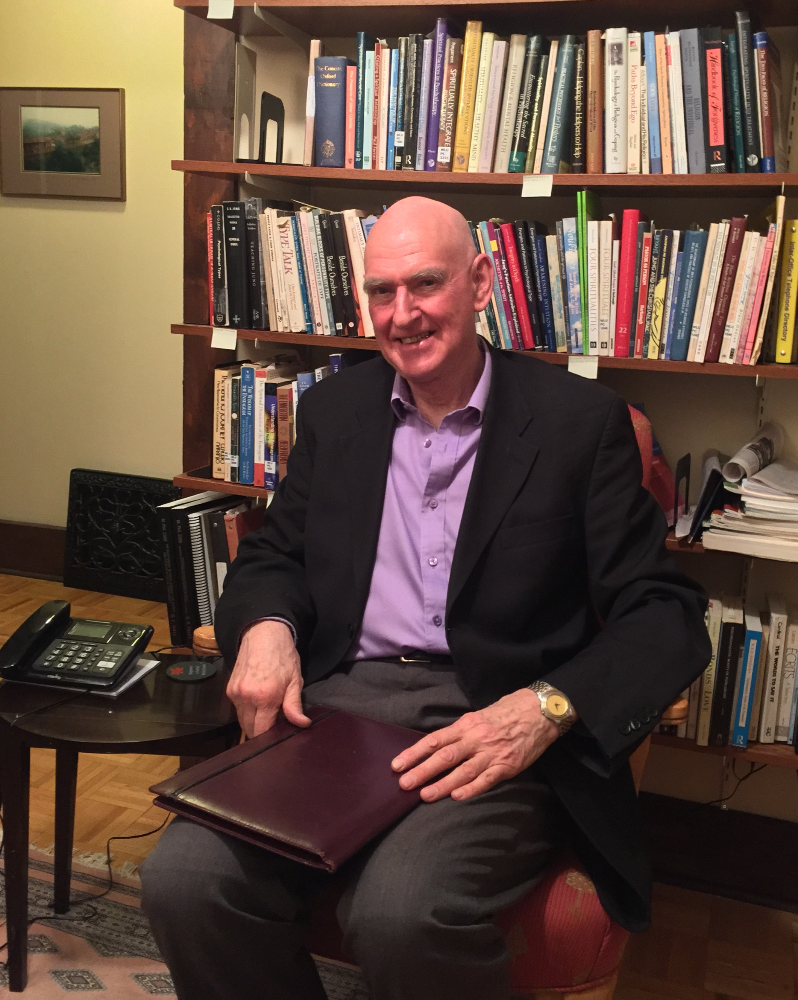

Patricia Rose's
Background
Dr. Christopher Ross has provided psychotherapy and supervised the psychotherapeutic work of other mental health professionals in a variety of settings including the Centre for Addiction and Mental Health (CAMH), Youthdale Treatment Services in Toronto, and the Southdown Institute for Religious and Clergy in Aurora. Until recently Dr. Ross was Associate Professor in Psychology and Religion in the Department of Religion and Culture at Wilfrid Laurier University, Waterloo.
He is currently associated with Waterloo Lutheran Seminary teaching “Faiths in Psychological Perspective”, and a course entitled “Mindfulness and Psychotherapy”. A current research project investigates the ways in which sensitivity to personality differences and familiarity with a variety of meditation methods may make psychotherapy and the development of mindfulness more efficient and effective in everyday-life.
He completed his doctoral training with Drs Charles and Robert Carkhuff authors of Towards Effective Counselling and Psychotherapy, the classic text in the history of psychotherapy research.
Psychotherapy
Dr. Dr. Ross’ priority is to connect those seeking help to the healing potentials within themselves for relaxation, resilience and self-worth.
Concerns
Dr. Ross’ clients bring to him range from feeling anxious or being worn out, to challenges to personal and social meaning, and problems with intimacy or confidence:
“I have found many seeking help carry more grief than they realise, while others more anger. Mindful awareness of either releases energy that then naturally flows toward what individuals really value”
Other clients simply need support and guidance while encountering a new life-stage.
Approaches
Dr. Ross uses a variety of approaches in the psychotherapy that he offers. Barriers to relaxation, for example, are explored. Belief-systems – whether religious or secular – are examined for their potential to recover a sense of life-satisfaction, while habits producing stress or that drain energy may be gently challenged. To guide the healing process Dr. Ross may draw on his knowledge of psychological diagnoses, but more often he organises his work with clients around such existential concerns as finding meaning while dealing with loneliness, intimacy or death anxiety, or the absence of a sense of freedom and entitlement.

Fees
$135 Initial Consultation
Ongoing Psychotherapy – a sliding scale is applied
Consultations in Personality Type
As a supplement to psychotherapy or as a stand-alone aid to self-development, Dr. Ross has expertise in two approaches to personality: Jung’s typology using the Myers Briggs Type Indicator (MBTI), and the Nine-Points of the Enneagram - in the Narrative Tradition and from the Riso-Hudson Enneagram Type Indicator (RHETI). Much of his research and teaching while at the Department of Religion and Culture of Wilfrid Laurier University centred upon the application of personality type to personal and spiritual development over the human life-cycle.
Fee
$135 for initial and subsequent consultations
Psychotherapy Supervision
Dr. Ross has experience supervising the psychotherapy offered by health professionals and educators in a number of different settings, including out-patient and in-patient treatment at the Centre for Addiction and Mental Health (CAMH), Toronto, Youthdale Treatment Centres, Ontario, and the NIMH-funded Comprehensive Community Mental Health Centre in Youngstown, Ohio. Currently his clinical supervision includes those seeking registration with the newly formed Ontario College of Psychotherapists.
Approaches to psychotherapy supervision
The methods that Dr. Ross uses in supervision vary with the needs of the individual psychotherapist. Overall he uses a competency based model - pioneered by the American Psychological Association - to organise the elements of his supervision. These may vary from case management methods, helping with premature terminations, low show rates and the intersection of gender, ethnicity and class for those professionals working in clinics and treatment services, to the intricacies of technique, transference and counter-transference in individuals’ independent practices. He also advises on regulatory and ethical issues arising from the practice of psychotherapy.

Fees
$135 Initial Consultation
Ongoing Supervision – a sliding scale is applied
Contact

"My office is in downtown Waterloo, Ontario, only one hundred steps from Vincenzos delicatessen store."
To enquire about an appointment with Dr. Christopher Ross please call:
519 500 2943
Extras
Selection of Publications (downloadable pdfs)
Ways of the Spirit - Ways of Personality TypesPsychotherapy: Cure of the Soul - Chapter 6: Buddhism, Healing and Pastoral Care
Canadian Woman Studies: Female Spirituality - Experiencing Mother Meera
Transforming Wisdom - Chapter 6: Personality, Individuation, Mindfulness